Prior sending messages from the eventmessenger to your mobile device, you need to:
This example covers the process on an android os mobile device. However the
procedure should be analogue on other devices. Start by searching the Telegram
App in your preferred App Store.
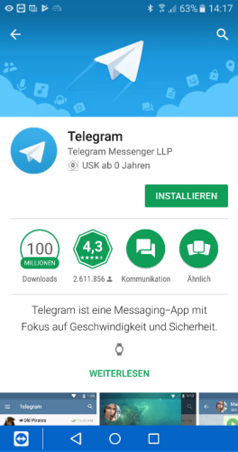
Start the App.
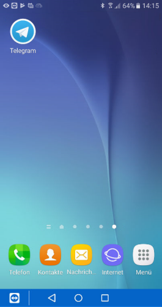
And begin the configuration.
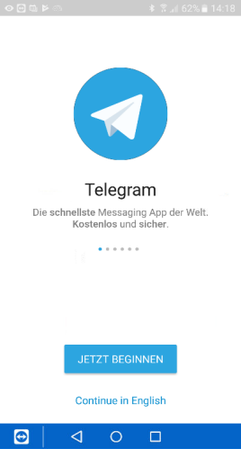
Telegram links his services to your mobile device by using its mobile number.
For authentication purpose Telegram wants to get access to various ressources of
your device. Primarily these are taking calls and reading sms mails.
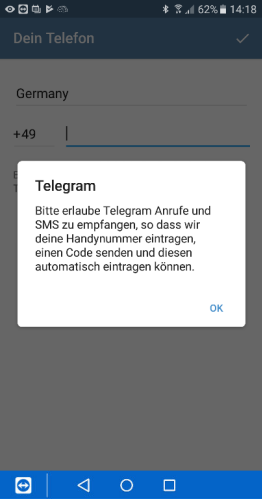
Please give access to your sms and phone calls
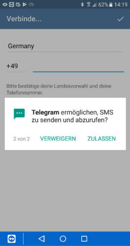
Please provide your mobile number without preceding '0'. That said, change "0172 123456"
to "172 123456"
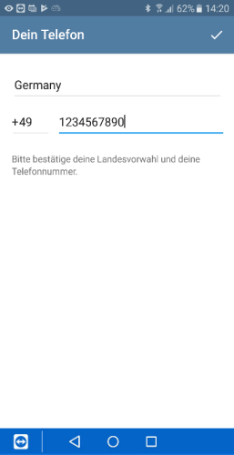
Telegram will validate your information by giving a call to the number you
provided.
After a successful validation, Telegram will ask for additional access rights.
These are not mandatory as long as you just use Telegram in conjunction with
EventMessenger. If you instead would use the App and all of its features you
need to allow access to your contact list, media and so on.
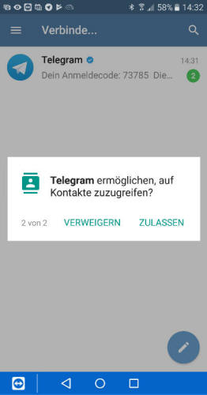
After the first time setup is done, you will see a blank screen.
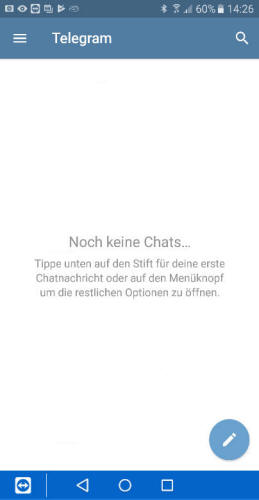
You can now start searching your contact list if anybody else is using telegram
or proceed to create a new bot. In case of the latter, we will add a special
contact to our contact list. This contact is a Telegram built-in service called
"botfather". "botfather" will create your bot.
In order to start talking to "botfather" open your preferred mobile browser and
browse to: telegram.me/botfather.
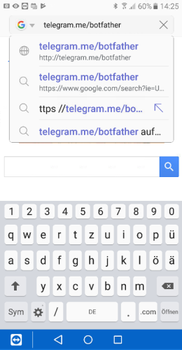
You will see the homepage of the service. Please add the "Botfather" to your
Telegram contact list by clicking "Send Message".
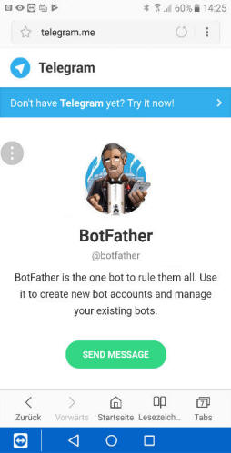
After Telegram has been shown up, start a new conversion with the "botfather" by
clicking the "Start" button below.
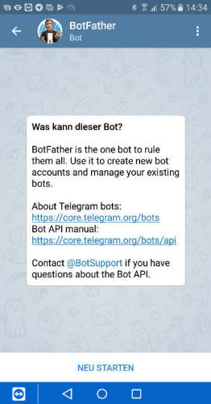
"Botfather" will provide some possible commands to choose from. Please select
the "/newbot" command.
After we did this, "botfather" should ask you to provide a display name for the
new bot.
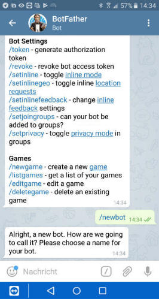
After that, we provide a username for the bot which is basically the same like
the displayname except it must end with the phrase "bot"
Example:
Display Name: EventMessenger
User Name: EventMessengerBot
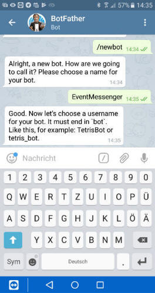
In the end, "Botfather" will provide the access token that will be used by the
EventMessenger.
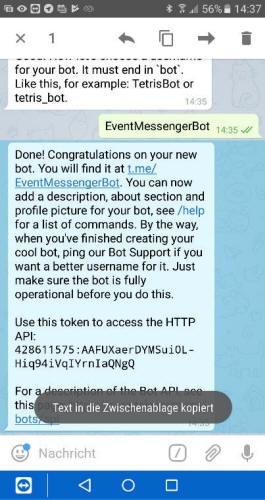
Please use your favorite way to transfer the token from your mobile device to
the location where EventMessenger is installed.
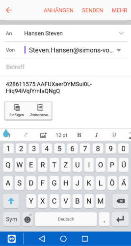
Please continue by adding the token to the
"Add Bot" Configuration
Dialogue.